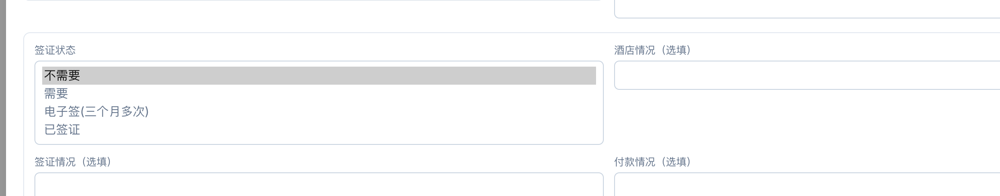
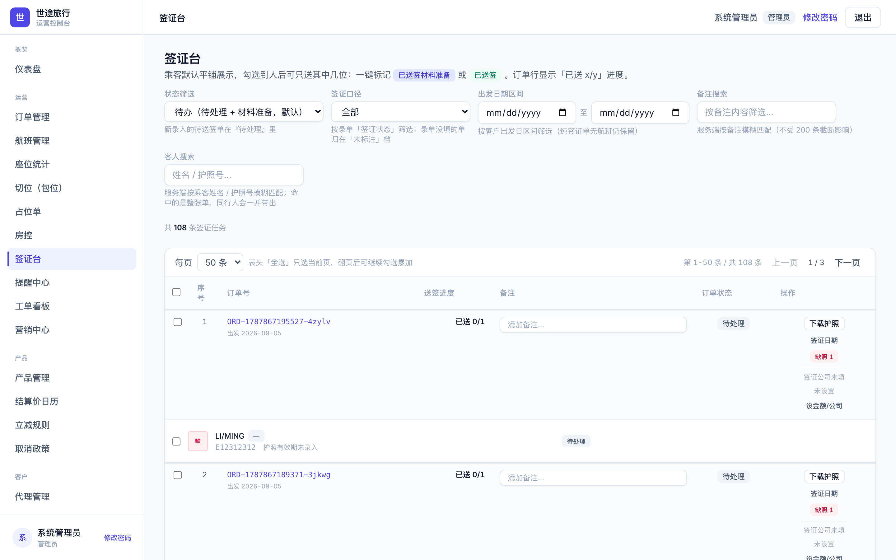
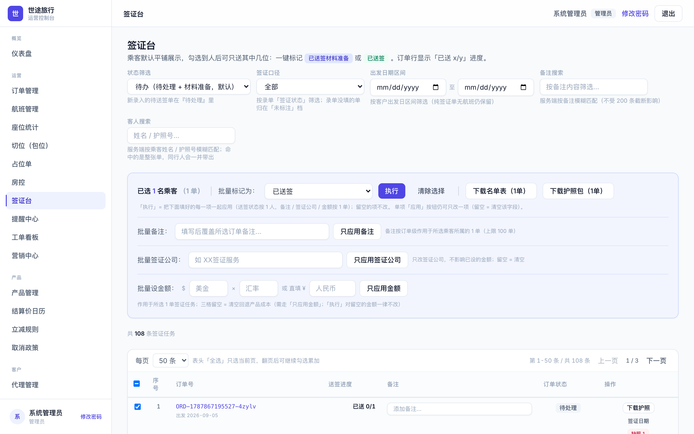
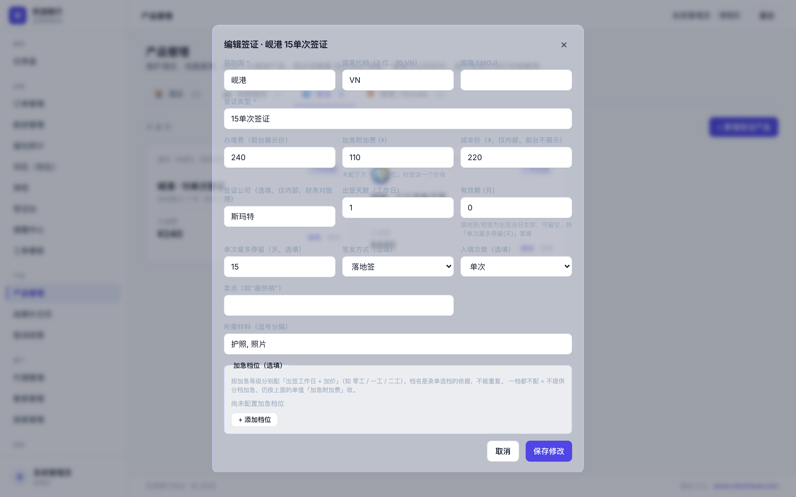

签证就按你说的改
2026-08-30 · 改之前你过一遍，对就开工，不对圈出来
你说的：「客人进单是需要签证就进需要签证，自备签单机票就进不需要，送了签的只要确认了就进已签证。」
「只要是办签证都是需要签证，除开 15 天单次或者单办签证的特殊情况，有颜色区分或者提示就可以。」
就按这个做，一条流水线：
录单只选两个：
需要签证 / 不需要
→
签证台需要签证的自动进来
按日期导表送签
→
标已送签勾人、一键标记
跟你现在的操作一样
→
已签证整单人都送完
系统自动变，不用谁去点
一、录单砍成两个选项

现在录单这里四个选项，代理经常选岔。改完只留
需要 和 不需要 两个：
电子签 已签证 都拿掉。
客人自己有签证、自备签、单机票免签——全选不需要。
只要是我们办的，一律需要，电子签不用单独选。
二、签证台你怎么用还怎么用，最后一步系统替你点

需要签证的单自动进签证台，按出发日期筛、导表送签，都不变。

勾人、批量标 已送签，还是现在这个操作。区别在后面：整单的人都标完，
订单自动变 已签证，你不用再去改订单，别人也改不动这个标。
系统里已签证的人数 = 你送签的人数，自带签证的客人全在「不需要」里，混不进你的数。
三、特殊情况看颜色，不靠脑子记
默认都按 15 天单次。特殊的，签证台上自动亮标：
电子签
非15天单次
纯签证单
——从签证产品上带出来，录单的人选不了也选不错。
四、钱的两条规矩

1. 价格改一处就生效。不加急 240、加急 350 配在签证产品上（就是上图这里），
改一次全站跟着变，不用挨个套餐改。节假日价照旧走补收。
2. 已送签不退钱。人送签了客人又说不办——240 不退，批文成本已经花了。
系统会拦，特殊情况只有管理员能例外退。
五、三件事你定
- 已签证打在哪个时刻——材料送出去就算，还是等出签才算？你对数按哪个口径，系统就按哪个。
- 颜色标几种够不够——电子签、非 15 天单次、纯签证单。加急要不要也单独一个色？
- 一单里有人办有人自备（三个人两个办一个自备）——签证台只显示要办的人、人数只算要办的。对吧？
对就回个可以，马上开工。哪条不对直接圈。